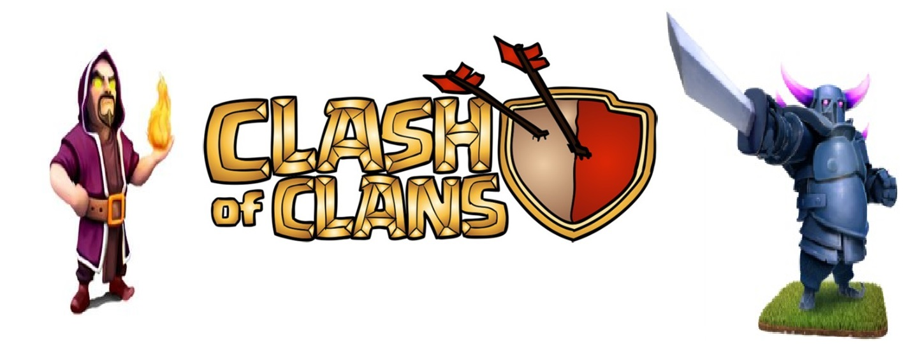
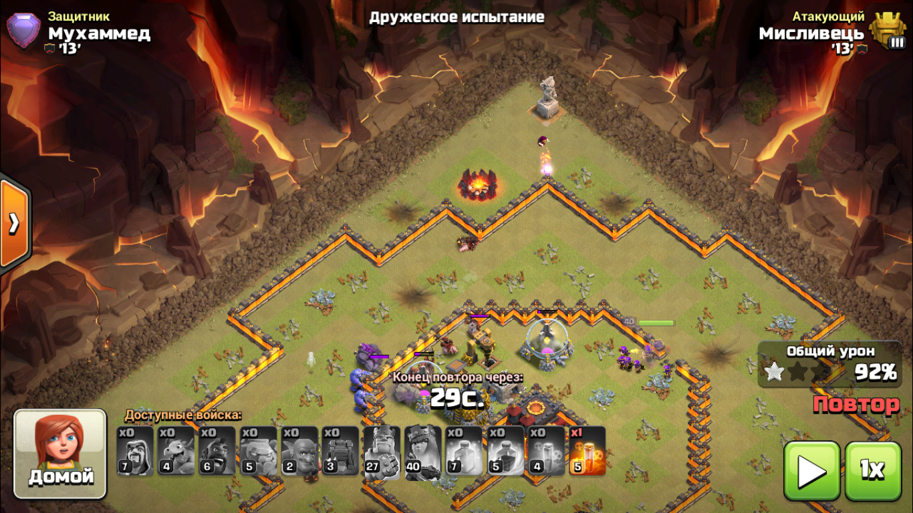

Меня зовут Андрей.
Мне 18 лет и я играю в Clash of clans уже почти 4 года. И знаю о игре приктически всё.
Дважды руководил кланом.
Первый мой клан продержался 3 года. Я был не самым успешным главой клана, но всем игрокам которые были в клане я доверял как себе. И из-за этого я и потерял клан.
Я передал главу игроку своего клана, которому я доверял и доверие было закреплено 1 годом совместной игры.
Первое время мне было очень плохо из-за того что я потерял 3 года своих трудов.
Позже я понял что клан это не место где собираются люди и играют клановые войны, а клан это коллектив, друзья которые никогда не бросят и помогут в трудную минуту.
Игрок который меня всегда поддерживал и помагал мне принимать правильные решения. Стал для меня лучшим другом, хоть мы и никогда не виделись в реальной жизни.
Мы с ним знакомы уже 4 года. Почти с самого начала создания клана.
Что я могу сказать о этой игре:
Она очень жестока по отношению к игрокам.
Баланс клановых войн ещё более менее нормальный. Но вот Лиги войны кланов это что то.
Я верил что там есть баланс, но увы я сильно ошибался. И стало это понятно когда против моего 9тх максимальной прокачки по защите (Король: 20лв; Королева 26лв) поставили противнка почти фулового 12тх.
Если подумать то к этому сильно придераться не стоит. Честных войн никогда не было и не будет.
Ещё я бы хотел затронуть тему о логике воинов. Её сложно понять, когда видишь следующую картину.

И таких моментов было очень много. Обидно бывает когда в клановой войне из-за этого ты не успеваешь взять 3 звезды.
Это примерно вся информация о бо мне как и игроке.
Желаю вам хорошего фарма, хороших кубков, и красивых трёшек на кв!